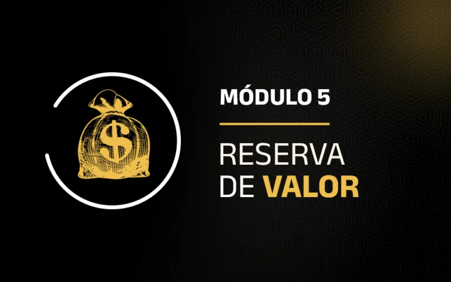
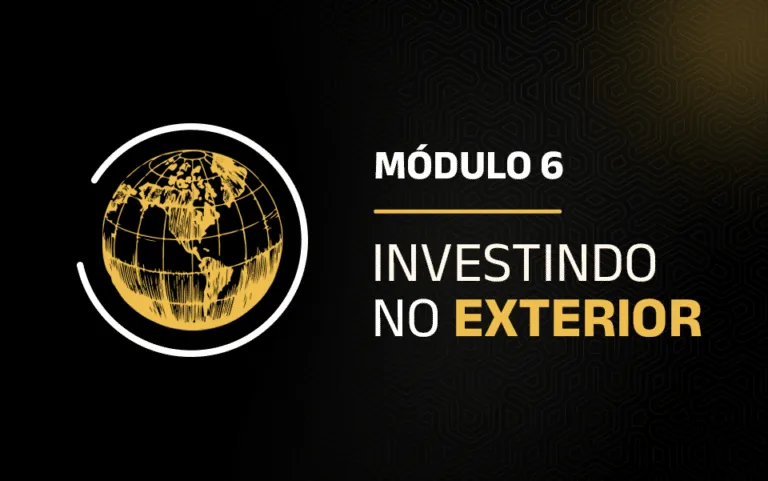

Análise de setores
Destrincha os pontos mais importantes para entender cada setor da economia. Ensina como funciona o ciclo de crescimento de empresas em diferentes áreas e quais indicadores realmente importam para investir com estratégia.
O seu caminho para a independência financeira começa agora, e nós vamos te guiar em cada etapa dessa jornada.
A AUVP foi criada para te dar o conhecimento e as ferramentas necessárias para dominar o universo das finanças e dos investimentos. Aqui, você vai aprender a organizar sua vida financeira, investir com inteligência e construir uma base sólida para um futuro tranquilo e seguro.
Em breve, você receberá um e-mail com acesso à plataforma. Caso não o receba, verifique a caixa de spam ou entre em contato com nosso suporte.
Transforme sua mentalidade sobre o dinheiro, aprenda a eliminar crenças limitantes e a desenvolver disciplina para alcançar seus objetivos financeiros.
Descubra como organizar suas finanças pessoais, cortar gastos desnecessários e começar a planejar para alcançar o primeiro milhão.
Aprenda sobre os principais investimentos de baixo risco, como Tesouro Direto, CDBs e outros ativos de renda fixa, e como aplicá-los na prática.
Mergulhe no mundo das ações, dividendos e fundos imobiliários, e aprenda a montar sua própria carteira de investimentos de renda variável.

Saiba como investir em ouro, Bitcoin e outras opções para proteger e valorizar seu patrimônio a longo prazo.

Aprenda a investir no mercado norte-americano, conhecendo ETFs, Reits e outras oportunidades no exterior.
Aplique tudo que aprendeu na prática com a gestão de carteira e utilize o PIAR, a plataforma exclusiva do Raul, para te ajudar a alocar seus investimentos com inteligência.
Entenda como declarar seus investimentos e recolher os impostos corretamente, evitando surpresas desagradáveis no final do ano.
Depois da grade principal, o caminho é seu: se quiser aprofundar algum tema de estudo, os módulos extras estão à sua disposição.
Destrincha os pontos mais importantes para entender cada setor da economia. Ensina como funciona o ciclo de crescimento de empresas em diferentes áreas e quais indicadores realmente importam para investir com estratégia.
Este conteúdo mostra como decisões políticas, guerras, políticas econômicas e relações internacionais afetam diretamente os investimentos, desenvolvendo uma visão estratégica para antecipar movimentos do mercado e proteger a carteira.
Auxilia na compreensão da saúde financeira de empresas e na tomada de decisões de investimento fundamentadas. Ensina a interpretar balanços, DRE, fluxo de caixa e estrutura de capital, além de relembrar todos os indicadores.
Apresenta o universo das criptomoedas para iniciantes de forma extremamente didática e acessível, alinhando conceitos fundamentais, como Bitcoin, Ethereum, blockchain, ciclos de mercado e análise de ativos, à filosofia de investimentos Buy and Hold para quem busca clareza antes de aportar no longo prazo.
Mergulha na Renda Fixa Internacional, ensina sobre stocks, REITs e Private Equity, e explica como o ciclo econômico impacta os investimentos. Assim, ajuda a expandir oportunidades no mercado global.
Um guia 100% prático focado em ensinar nossos membros a navegar e utilizar todo o ecossistema AUVP, incluindo a conta banking, a AUVP Analítica e o Minhas Finanças e outras ferramentas para investir e organizar sua vida financeira com total autonomia.
Você vai receber acesso exclusivo a plataforma AUVP para membros, com todos os módulos sendo liberados após a aula inaugural. Pela plataforma é possível tirar as suas dúvidas na comunidade e interagir com outros usuários quando quiser, além de poder tirar suas dúvidas nas lives com o Raul. Se quiser já ir se familiarizando, você pode acessar o onboarding da AUVP.
O seu acesso é de 1 (um) ano, incluindo todas as atualizações que forem lançadas durante esse período
Além do eBook, você terá acesso a mais de 100 aulas gravadas e a atualizações de mercado em lives, ao vivo, todas às segundas-feiras, às 19h. Tudo para você acompanhar o conteúdo quando e onde quiser, no seu ritmo.
Não se preocupe, nossa equipe de suporte está à disposição para te ajudar com qualquer problema técnico. Você pode entrar em contato conosco pelo WhatsApp ou pelo e-mail de suporte.
A AUVP foi criada para atender tanto iniciantes quanto pessoas que já têm algum conhecimento em finanças. Começamos com o básico e vamos evoluindo para tópicos mais avançados, para que todos possam aproveitar ao máximo.
Você tem acesso a todo o conteúdo por 1 ano, então pode revisar as aulas sempre que necessário. Além disso, nossa comunidade está aqui para te apoiar, e você pode tirar dúvidas sempre que precisar.
Ao concluir a AUVP, você receberá um certificado de conclusão, que pode ser uma excelente adição ao seu currículo, especialmente se você estiver buscando aprimorar suas habilidades em finanças e investimentos.